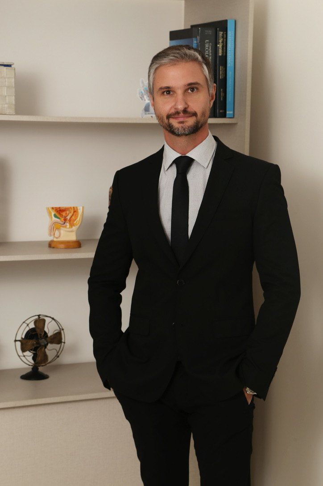
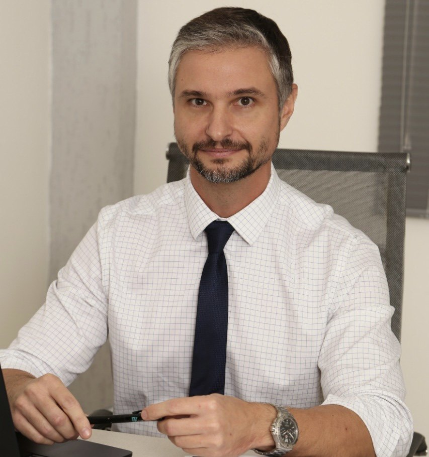

Cirurgia Robótica desde 2015✦Fellowship Orsi Academy / OLV — Bélgica✦Endourologia✦Laparoscopia✦Litíase (cálculos)✦Tumores do trato urinário✦Rezūm✦Universidade Federal de Ciências da Saúde de Porto Alegre✦Hospital de Clínicas de Porto Alegre✦Hospital dos Servidores do Estado do RJ✦
Cirurgia Robótica desde 2015✦Fellowship Orsi Academy / OLV — Bélgica✦Endourologia✦Laparoscopia✦Litíase (cálculos)✦Tumores do trato urinário✦Rezūm✦Universidade Federal de Ciências da Saúde de Porto Alegre✦Hospital de Clínicas de Porto Alegre✦Hospital dos Servidores do Estado do RJ✦


Sobre
Dr. Marco Antônio Corsetti
Sou médico Urologista formado pela Universidade Federal de Ciências da Saúde de Porto Alegre, com uma trajetória consolidada em Cirurgia Geral no Hospital de Clínicas de Porto Alegre e em Urologia no renomado Hospital Servidores do Estado do RJ. Minha paixão pela urologia e busca constante por excelência me levaram a certificar-me em cirurgia robótica em 2015 e buscar experiencia fora do pais em fellowship na Orsi Academy / OLV -Onze-Lieve-Vrouwziekenhuis (Bélgica). Sou um dos pioneiros em cirurgia robótica no Rio de Janeiro.
Minhas especialidades incluem Endourologia, Laparoscopia, Litíase (cálculos), Tumores do trato urinário e, é claro, a Cirurgia Robótica.
Os cálculos urinários podem ser uma fonte significativa de desconforto, impactando diretamente na qualidade de vida do paciente. Compreendendo a natureza desafiadora dessa condição, ofereço tratamentos baseados nas melhores tecnologias disponiveis atualmente para proporcionar alívio rápido e eficaz. A abordagem personalizada começa com uma avaliação detalhada seguida por um tratamento assertivo e minimamente invasivo.
No coração da minha prática médica está um compromisso inabalável com a saúde masculina, e em especial, no tratamento do câncer de próstata. Com uma formação sólida e uma paixão contínua pela inovação e tecnologia, dedico uma parte significativa da minha prática ao diagnóstico precoce e tratamento eficaz do câncer de próstata. Com abordagens modernas, tecnologia avançada e uma equipe comprometida, trabalhamos incansavelmente para oferecer aos pacientes o melhor tratamento, resultando na melhora de qualidade de vida. Sua saúde é nossa prioridade, e estamos aqui para guiá-lo em cada passo do caminho, fornecendo cuidados especializados e humanizados. Confie na experiência e dedicação para enfrentarmos juntos o desafio do câncer de próstata.
Em meu compromisso contínuo com o avanço da urologia oncológica, destaco a abordagem revolucionária da cirurgia robótica para o câncer renal. Utilizando a mais recente tecnologia, ofereço procedimentos precisos e minimamente invasivos, proporcionando aos pacientes uma recuperação mais rápida e resultados altamente eficazes. A cirurgia robótica permite uma visão tridimensional detalhada e movimentos precisos, garantindo a remoção precisa do tumor, preservando ao máximo a função renal.
Tratamento para Hiperplasia Prostática Benigna (HPB)
O Rezūm é uma inovadora terapia minimamente invasiva para o tratamento da hiperplasia prostática benigna (HPB), uma condição comum que causa o aumento da próstata e pode levar a sintomas urinários desconfortáveis. Utilizando vapor de água, o Rezūm reduz o tecido prostático em excesso de forma segura e eficaz, proporcionando alívio dos sintomas sem a necessidade de cirurgia invasiva. Este procedimento é rápido e permite uma pronta recuperação, com menor risco de efeitos colaterais. Nossa equipe especializada está pronta para oferecer essa solução avançada, ajudando você a melhorar sua qualidade de vida com um tratamento moderno e eficiente.
A harmonização peniana emerge como uma solução inovadora no campo da estética íntima masculina, projetada para oferecer não apenas benefícios estéticos, mas também elevar a autoestima e o bem-estar dos homens.
Esta técnica visa melhorar a proporção e simetria do membro masculino através de métodos seguros e minimamente invasivos. Com a combinação de tecnologias modernas e técnicas médicas altamente personalizadas, a harmonização peniana se adapta às necessidades e desejos individuais de cada paciente.
“Atendimento humanizado com uma ímpar atenção ao histórico de saúde e relato do paciente.”
Alexander E. · 29 de julho de 2025 · Consulta verificada★★★★★
“O Dr. Marco Antônio demonstrou um profissionalismo exemplar e um conhecimento profundo na sua especialidade, transmitindo-me grande confiança desde a primeira consulta. O seu atendimento atencioso e a clareza nas explicações sobre o diagnóstico e o tratamento foram fundamentais para me tranquilizar. Sinto-me muito grato pela sua dedicação e pelo cuidado excecional que recebi.”
Nabil R. · 13 de maio de 2025 · Consulta verificada★★★★★
“Marco Antônio atende a todas as expectativas de pacientes exigentes, até em demasia, como eu. Ele vê o ser humano que está diante dele, para além da doença.”
Henrique P. · 10 de setembro de 2024 · Consulta verificada★★★★★
“Gostei muito da consulta que demonstrou bastante conhecimento e experiência no assunto que me trouxe a ele.”
Jorge Q. · 15 de outubro de 2026 · Consulta verificada★★★★★
“profissional incrível, tirou todas as minhas dúvidas e explicou tudo com detalhes.”
Thiago G. · 10 de outubro de 2026 · Consulta verificada★★★★★
“Super atencioso!! Não mede tempo pra falar com você, e lê tudo! Organizado, explica tudo e está disposto sempre!”
Anônimo · 9 de outubro de 2026 · Consulta verificada★★★★★
“Fui ao médico entender se a vasectomia é para mim. O Dr. foi muito atencioso a responder minhas perguntas e foi sincero na sua recomendação, dando todos os esclarecimentos que poderia pedir.”
JK · 29 de setembro de 2026 · Consulta verificada★★★★★
“Excelente profissional, atencioso, analisa detalhadamente os exames, explica com facilidade o caso e orienta a mais simples e melhor forma de tratamento sem complicações.”
Jorge E. · 23 de setembro de 2026 · Consulta verificada★★★★★
“Excelente profissional atencioso conhecimento do assunto me explicou tudo pacientemente recomendo”
C. · 17 de setembro de 2026 · Consulta verificada★★★★★
“Da muita atenção na consulta, e sempre muito disposto a ajudar a resolver cada problema. Indico pra todos !!!”